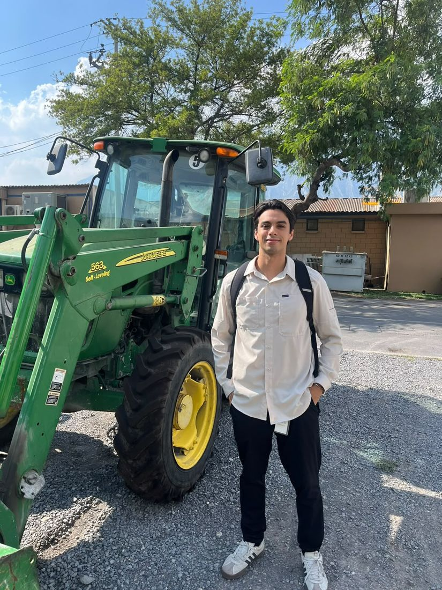

John Deere
Jul 2024 – Jun 2025
Monterrey, Mexico


Mechanical Design Intern · Turf Division
A one-year internship in product engineering for lawn and turf equipment. I designed and optimized plastic, sheet-metal and mechanism components in Creo Parametric, released drawings with GD&T and BOMs in Windchill, and worked in design reviews with the Simulation, Manufacturing and Testing teams.
Part names and images are generalized. Product details are under NDA, and I am happy to walk through my approach in an interview.
Creo ParametricWindchillAltair InspireSimSolidGD&TDFM3D-printed prototypes
Plastic part under long-term load
- Problem
- A cantilevered plastic part deformed by about 20 mm under long-term load (creep).
- My work
- Iterated rib layouts, curvature and material, checked each option in SimSolid and confirmed it still fit the assembly.
- Result
- About 35% less creep deformation, inside the safe zone.
Rotating part: machined metal to molded plastic
- Problem
- A machined metal part in a mechanism was heavy and expensive to make, with targets to cut both cost and weight.
- My work
- Ran generative design in Altair Inspire, then turned the organic result into a geometry that can be injection molded.
- Result
- About 70% lighter, well past the weight target.
High-volume stamped part
- Problem
- A high-volume stamped part used more steel than it needed.
- My work
- Found the stress concentrations, proposed material and geometry changes and closed the design with the FEA team.
- Result
- Up to 30% less material per part.
Operator adjustment mechanism
- Problem
- Height was set by turning a knob connected to a cam. Operators felt a pin would be more reliable and solid.
- My work
- Moved to an index plate with a loose hand pin and adapted the linkage so the pin works as the height stop, plus new supports and better reach for the operator.
- Result
- Mechanism proposal modeled in Creo with tolerances, GD&T drawings and printed prototypes.